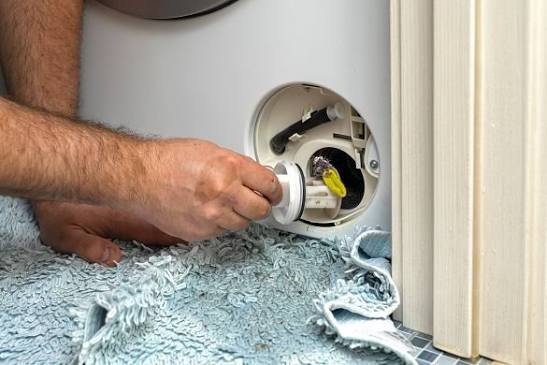

A washing machine that fills but won't empty is one of the most common laundry problems we see. The good news is that the culprit is usually a blockage you can clear yourself in a few minutes, provided you take a few safety precautions.
A washing machine that won't drain is usually blocked at the pump filter, kinked or clogged in the drain hose, or blocked at the standpipe or household drain. If those are clear, the drain pump itself may have failed. The pump filter is the first thing to check.
Why a washing machine won't drain
A clogged pump filter
Coins, buttons, hair clips, socks and lint collect in the pump filter, which is designed to protect the pump. When it clogs, water can no longer be pumped out.
A kinked or blocked drain hose
If the machine has been pushed back against the wall, the hose can kink. Soap residue and lint can also build up inside it over time.
A blocked standpipe or household drain
If water backs up out of the standpipe, or your laundry or kitchen sink also drains slowly, the blockage is in the household plumbing rather than the machine.
A failed drain pump
If the filter and hose are clear, the pump may be seized or its impeller broken. A humming pump that doesn't move water, or a pump that makes no sound at all, points to a failed pump.
Too much detergent
Excess suds can confuse the water-level sensor and prevent the machine draining or spinning normally.
Pressure switch or control board faults
The machine uses a switch to sense water level. If it fails, the machine may not know it needs to drain. These faults often show up as error codes.
Step-by-step: how to check and clear the blockage
Switch the machine off and unplug it before touching the pump filter. The water in the drum may be hot and there may be a lot of it. Never reach into the pump while the machine is connected to power.
- Switch off and unplug. Pause the cycle, switch off at the wall and unplug the machine.
- Check the drain hose. Pull the machine out carefully and check the hose at the back for kinks, and make sure it isn't crushed by the machine.
- Prepare for water. Lay down towels and put a shallow baking tray or tub in front of the machine. Look for a small access flap at the bottom front corner.
- Drain the residual water. Some machines have a small emergency drain hose beside the filter. Use it to empty the water into the tray, a little at a time.
- Remove and clean the filter. Slowly unscrew the filter, anticlockwise, and let the remaining water drain. Remove coins, lint, hair and fabric from the filter and the housing, and check the impeller behind it turns freely.
- Refit and test. Screw the filter back in firmly, close the flap, plug in the machine and run a drain-only or short spin cycle.
- Check the standpipe. If the machine still struggles and your sink also drains slowly, the blockage is in the household drain. Check your manual for the correct hose height.

When to call a technician
If the filter and hose are clear and the machine still holds water, or if you hear the pump humming without moving water, it's time for a professional. Call us if:
- The pump filter is clean but the water still won't drain.
- You can hear the pump humming, clicking or making no noise at all.
- The machine displays a drain-related error code.
- Water is leaking from around the pump or filter housing.
- The drum won't spin afterwards (see our washing machine not spinning guide).
Our technicians test the pump, impeller and water-level switch, clear stubborn blockages and replace failed pumps on the spot. Common drain pumps are carried on the van, so most drainage repairs are finished in one visit.
What does a drainage repair cost?
| Fault | Typical on-site range | Typical time |
|---|---|---|
| Water not draining out | R450 – R750 | 30 mins |
| Drum not spinning or turning | R550 – R1,100 | 45 mins |
Your price is confirmed in a fixed quote after diagnosis. If you proceed, the initial diagnostic fee is waived and the repair is covered by our 6-month parts and labor warranty.